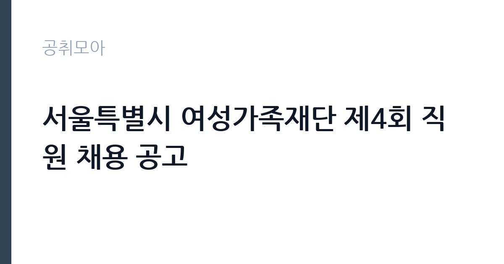

[공공기관] 서울특별시 여성가족재단 제4회 직원 채용 공고
서울특별시여성가족재단 · 서울 · 마감 2026-10-27 (D-20) · 출처 나라일터

한눈에 보는 모집 조건
| 기관 | 서울특별시여성가족재단 |
|---|---|
| 공고명 | 서울특별시 여성가족재단 제4회 직원 채용 공고 |
| 고용형태 | 정규직 |
| 근무지 | 서울 |
| 게시일 | 2026-10-07 |
| 마감일 | 2026-10-27 (D-20) |
지원자격, 이렇게 읽으세요
- 정규직 3급(연구) 1명 계약직 4급(사업) 1명 계약직 5급, 대리 5
- 접수 ~2026-10-27 마감
- 세부 조건은 원문 공고문 확인
모집 분야는 연구와 사업, 경영, 시설, 사업 수탁으로 나뉘며 직급별로 요구하는 경력과 학위가 다릅니다. 연구 3급은 관련 분야 박사 학위나 그에 준하는 연구 경력을 요구하는 경우가 많고, 사업과 경영 직급은 해당 분야 실무 경력을 중심으로 평가합니다. 계약직과 대체 인력은 계약 기간과 전환 가능 여부를 따로 확인해야 합니다. 거주지와 성별 제한은 없으며, 남성은 병역 의무 불이행 사실이 없어야 합니다. 응시 연령은 만 18세 이상이며 정년 범위 내여야 합니다. 결격사유는 재단 인사규정을 따르므로 접수 전에 원문에서 대조하시기 바랍니다.
이 공고의 포인트
이 공고의 매력은 한 번에 여러 직급과 분야가 열린다는 점입니다. 연구직부터 사업과 경영, 시설 기능직까지 포함되어 있어 경력 수준에 맞는 자리를 고를 수 있습니다. 서울시 출연기관이라 보수와 복지가 안정적이며, 여성과 가족 정책이라는 명확한 미션을 가진 기관에서 일한다는 보람이 있습니다. 접수 기간이 10월 21일부터 27일까지로 정해져 있어 서류를 미리 갖출 시간이 있습니다. 다만 분야마다 자격요건과 제출서류가 다르므로, 관심 분야 공고문을 출력해 체크리스트부터 만드는 것이 좋습니다.
전형은 어떻게 진행되나
전형은 원문 공고문에 안내된 절차를 따릅니다. 서울시 출연기관 채용은 서류전형과 필기전형, 면접전형 순으로 진행되는 것이 일반적이며, 연구직은 연구실적 심사가 추가되기도 합니다. 서류전형에서는 응시자격 충족 여부와 자기소개서, 직무수행계획서를 평가하므로 지원 분야의 정책 현안을 반영해 쓰는 것이 좋습니다. 필기전형은 NCS와 전공 평가가 나오는 경우가 많습니다. 면접은 직무 이해도와 조직 적합성을 묻는 구조화 면접이 일반적입니다. 온라인 지원 페이지에서 접수하며, 세부 일정과 배점은 원문 공고문에서 확인하시기 바랍니다.
원문에서 확인한 전형 방식
○ 모집분야 : 연구, 사업, 경영, 시설, 사업(수탁) ○ 선발직급 : 3급, 4급, 5급, 5급(대체), 6급(대체), 대리, 주임, 기능직주임 등 ○ 고용형태 : 정규직, 계약직 ○ 자격요건 : 경력, 학위 등 ○ 접수기간 : 2026년 10월 21일 ~ 2026년 10월 27일 ○ 응시방법 : 온라인 지원페이지를 통한 접수(https://seoulwomen.hrdms.kr/) ○ 문의처 : 070-8633-4530 ※기타 세부사항은 반드시 공고문을 참고하시기 바랍니다.
이런 분께 추천해요
- 여성가족 정책과 보육, 양성평등 사업에 관심 있는 분께 추천합니다. 미션이 분명한 기관에서 일할 수 있습니다.
- 정책 연구 경력을 살리고 싶은 분께 추천합니다. 연구직은 실적으로 평가받는 자리입니다.
- 시설과 보안, 미화 등 기능직 근무를 희망하는 분께 추천합니다. 교대와 통상 근무형태를 확인하고 지원하시기 바랍니다.
지원 전 체크리스트
- 원문 공고문에서 본인 지원 분야의 직급과 자격요건을 확인했습니다.
- 졸업증명서와 경력증명서, 자격증 사본 등 제출서류를 준비했습니다.
- 자기소개서와 직무수행계획서의 항목별 분량 제한을 확인했습니다.
- 접수 기간인 10월 21일부터 27일 사이에 온라인 접수를 완료하고 접수증을 저장했습니다.
모집 일정과 제출 타이밍
접수 기간은 2026년 10월 21일부터 10월 27일까지이며, 온라인 지원 페이지를 통해서만 접수합니다. 접수 시작 전에 자기소개서와 직무수행계획서 초안을 완성해 두면 기간 중에 여유 있게 제출할 수 있습니다. 서류합격자 발표와 필기, 면접 일정은 원문 공고문의 전형 일정을 따릅니다. 경력증명서와 자격증 사본 발급에 시간이 걸리므로 이번 주 안에 신청하시기 바랍니다.
직무 이해하기: 공공기관
여성가족재단 연구직은 여성과 가족 정책 연구와 사업 평가를 맡으며, 사업직은 보육과 양성평등, 경력단절여성 지원 등 현장 사업을 기획하고 운영합니다. 경영직은 회계와 예산, 총무 실무를 담당하고, 시설 기능직은 건물 보안과 미화, 순찰 업무를 수행합니다. 사업 수탁 분야는 시 위탁사업을 운영하는 자리로 현장 대응이 많습니다. 시민을 직접 상대하는 사업이 많아 정책 이해와 소통 능력이 중요하며, 부서에 따라 교대근무가 있으므로 근무형태를 미리 확인하시기 바랍니다.
자기소개서 작성 팁
자기소개서에서는 여성가족 정책에 대한 이해와 공감을 보여주는 것이 중요합니다. 연구직은 본인 연구실적이 재단 사업과 어떻게 연결되는지 구체적으로 쓰고, 사업직은 관련 사업 기획과 운영 경험을 사례로 푸시기 바랍니다. 경영직은 정확한 회계 처리 경험을, 시설직은 성실한 근무 태도와 관련 경험을 정리하면 좋습니다. 서울시 여성가족 정책 현안 한 가지를 골라 본인 견해를 직무수행계획서에 녹이면 설득력이 커집니다.
면접 준비 포인트
면접에서는 직무 이해도와 서울시 정책 현안에 대한 견해를 함께 묻는 경우가 많습니다. 연구직은 본인 연구 주제와 재단 사업의 연결점을, 사업직은 담당 사업의 추진 계획을 구체적으로 설명할 수 있어야 합니다. 경영직은 회계 실무 질문에 정확히 답하고, 시설직은 안전과 보안 의식을 보여주시기 바랍니다. 출연기관 면접은 블라인드인 경우가 많으니 출신 언급 없이 역량 중심으로 답변하시기 바랍니다.
급여·근무조건 읽는 법
보수는 재단 보수규정을 따르며 기본연봉에 각종 제수당과 기관 성과급이 더해지는 구조입니다. 채용플랫폼 집계에 따르면 재단 평균연봉은 3,249만원 수준으로 안내되어 있으나, 이는 사용자 입력 기반의 집계성 정보이므로 직급과 경력에 따라 달라질 수 있습니다. 정확한 기본연봉과 수당 금액은 원문 공고문의 보수 안내에서 확인하시기 바랍니다. 복리후생으로 선택적 복지비와 건강검진비, 출산축하금, 특수업무수당 등이 안내된 바 있습니다. 근무시간은 통상근무와 교대근무로 나뉘며 형태별로 월 근무시간이 다르므로 지원 분야의 근무형태를 확인하시기 바랍니다.
자주 묻는 질문
- 정규직과 계약직을 함께 뽑습니까
그렇습니다. 분야와 직급에 따라 정규직과 계약직으로 나뉩니다. 계약 기간과 갱신, 전환 가능 여부는 원문 공고문의 근로조건에서 반드시 확인하시기 바랍니다. - 접수는 어떻게 합니까
2026년 10월 21일부터 27일까지 온라인 지원 페이지를 통해 접수합니다. 등기우편 접수는 해당되지 않으니 기간을 놓치지 마시기 바랍니다. - 보수와 복지는 어떻습니까
재단 보수규정을 적용받으며 기본연봉에 제수당과 성과급이 더해집니다. 정확한 금액은 원문 공고문에서 확인하시기 바랍니다.
함께 보면 좋은 공고
[공공기관] (2026-7) 부산신용보증재단 제4차 기간제 계약직원 채용공고 — 마감 2026-10-15[공공기관] 강원연구원 육아휴직 대체인력 공개채용 공고 — 마감 2026-10-19[공공기관] 강원연구원 단기근로자(일용직) 공개채용 공고 — 마감 2026-10-19출처: 나라일터 공개정보를 바탕으로 공취모아가 정리한 안내글입니다. 모집 조건·일정은 변경될 수 있으니 지원 전 반드시 원문 공고문을 확인하세요. 본 글은 정보 제공용이며 합격을 보장하지 않습니다.